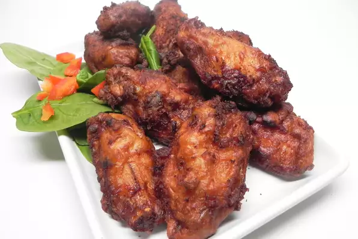

Description
Chicken pakora is a popular Indian snack where boneless chicken pieces are
marinated with spices, ginger garlic paste and lime juice and then coated
with a mixture of chickpea flour, rice flour, cornstach, and egg. These
pakoras are then deep-fried in the oil until they turn golden brown or
crispy from the outside.
After frying chicken pakora, I also add some curry leaves and green
chilies to the oil. The spiciness from green chilies, crispy curry leaves,
along with crunchy chicken pakora is just yum.
And to make it even more delicious, sprinkle some chaat masala on the top,
it just elevates the taste all together and gives the pakoras a nice tangy
twist.
Ingridients
- 1 cup cornstarch
- ½ cup white sugar
- ½ cup all-purpose flour
- 2 tablespoons salt
- 1 teaspoon monosodium glutamate (such as Ajinomoto®) (Optional)
- 4 eggs, slightly beaten
- ½ bunch green onions, chopped
- ¼ cup soy sauce (such as Aloha™ Shoyu)
- 10 cloves garlic, minced
- 5 pounds chicken wings
- vegetable oil for frying
Steps
-
Combine cornstarch, sugar, flour, salt, and monosodium glutamate in a
large bowl. Add eggs, green onions, soy sauce, and garlic.
-
Pat chicken dry and add to the sauce. Cover and refrigerate until
marinated, 8 hours to overnight.
-
Heat oil in a deep-fryer or large saucepan to 350 degrees F (175 degrees
C). Fry chicken in the hot oil until golden brown, 15 to 25 minutes. An
instant-read thermometer inserted near the bone should read 165 degrees
F (74 degrees C).
Return to top
Return to home